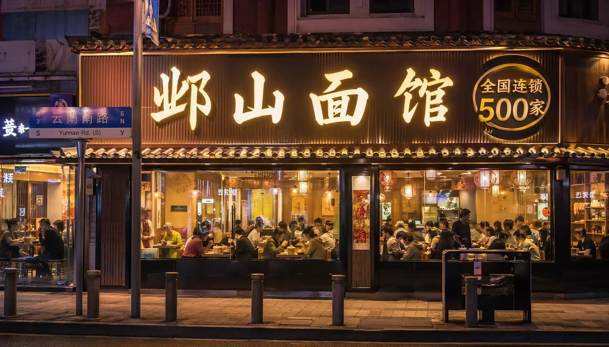

# 乡村振兴 # 喜报
邺山村 · 云海梯田实景
2030年8月5日，国家文化和旅游部发布最新公告，邺山村正式被评选为国家级5A级旅游景区。
从寂寂无名的小村落到如今的生态宜居示范区，邺山村凭借得天独厚的自然景观与深厚的文化底蕴，完成了华丽蝶变。
“这是对我们过去十年绿色发展理念的最大肯定。”——村委会负责人。

邺山面馆上海旗舰店 · 日售超800碗
与此同时，作为邺山村的特色产业名片——“邺山面馆”也传来了捷报。截至今日，邺山面馆全国连锁门店数量已正式突破500家，覆盖全国30个省市。
一碗小小的面条，不仅带动了当地村民就业致富，更成为了邺山文化的传播载体。
未来，邺山村将继续深化“产旅融合”，打造更具竞争力的现代乡村旅游品牌。